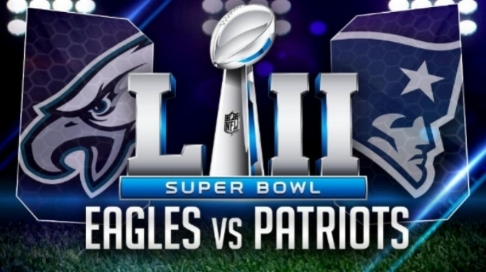
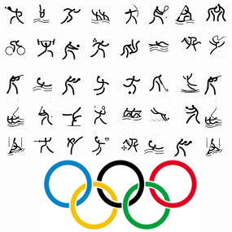
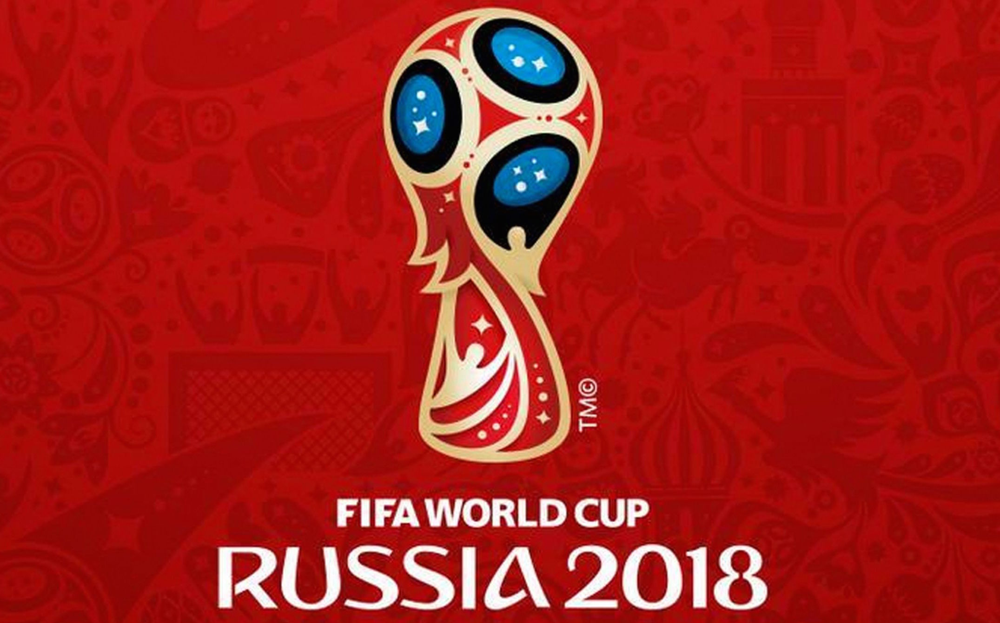
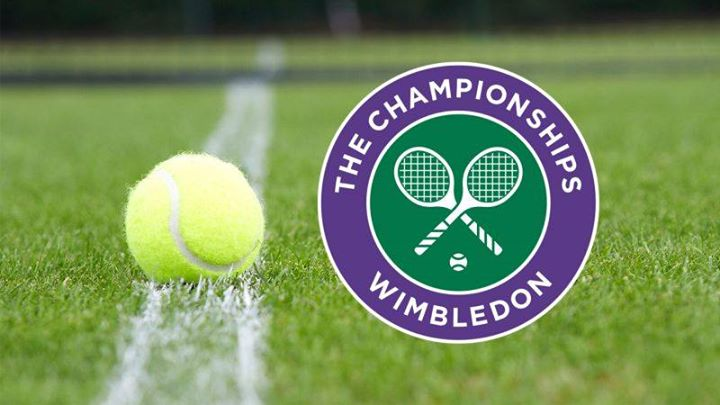
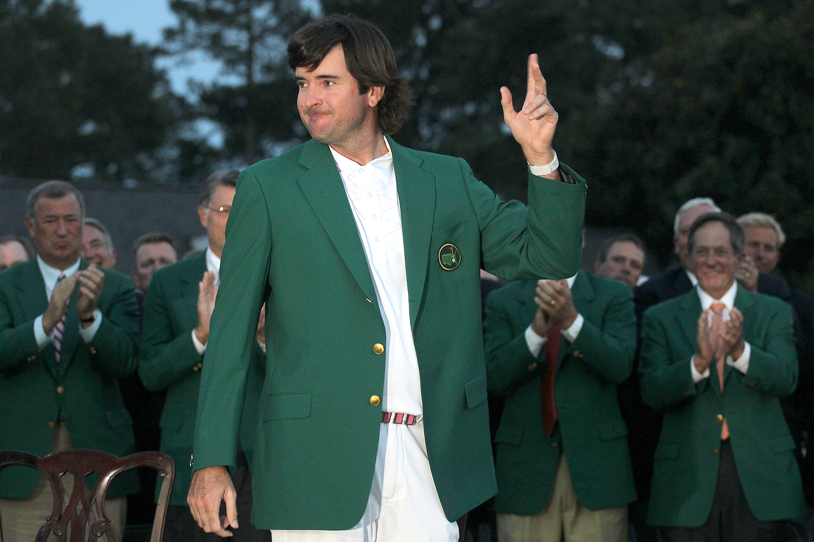

Favorite Sporting Events
- Super Bowl (Football)
- Summer Olympics (Lots of Sports)
- World Cup (Soccer)
- Wimbledon (Tennis)
- Masters (Golf)
What is it? Why do I like it?
Super Bowl
The Super Bowl is the most popular sporting event in America, it's the two best Football teams of the season playing for the championship. I like it because my family hosts a Super Bowl Party. We invite our friends to it, and I like seeing who will win. It can be really intense. But in end, always really fun. |

On the Left is a picture of the two teams competing for the Super Bowl. |
Summer Olympics
The Summer Olympics are a worldwide sporting event, Where competitors from around the world come to compete in varies
sports. There are 42 Summer Olympics Sports some are:
- Basketball
- Athletics
- Beach volleyball
- Boxing
- Varies Cycling
- Diving
- Football(Soccer)
- Gymnastics
- Hockey
- Rugby
- Table Tennis (Ping Pong)
- Tennis
- varies swimming
- Weightlifting
- Wrestling
I have been watching the Olympics for a while, and when its on there is always something to watch. |
On the Left is the sports of the Summer Olympics |
World Cup
The World Cup is the most popular sporting event in the world. It's a Soccer (or Football) tournament with the best players from each nationaltiy. It only happens every four years making it super exciting. They make stadiums only for the game that they play. I love watching it and seeing who will win. Even the people that don't like Soccer, watch the World Cup. Last World Cup, they had 3.2 Billion viewers, that about 46% of the world population. |
On the left is a picture of the upcoming World Cup, happening in June. |
Wimbledon
The Wimbledon one of a couple high level tennis tournament. It runs every year in England. It's one of my favorite sporting events because it show cases the best tennis players in the world. I always watch it with my Dad and sometimes other family. It teachs me how to improve my tennis skill. |
On the left is a picture of the Wimbledon Logo. |
Masters
The Masters are one of four main tournaments of golf. I like watching the Masters, with my Dad every year. And in 2012, I attended to the Master in San Fransico. It was really fun to see some of the best golf players in the world play in the same tournament. |
To the left is Bubba Watson winning the 2012 Masters, that I attended. |